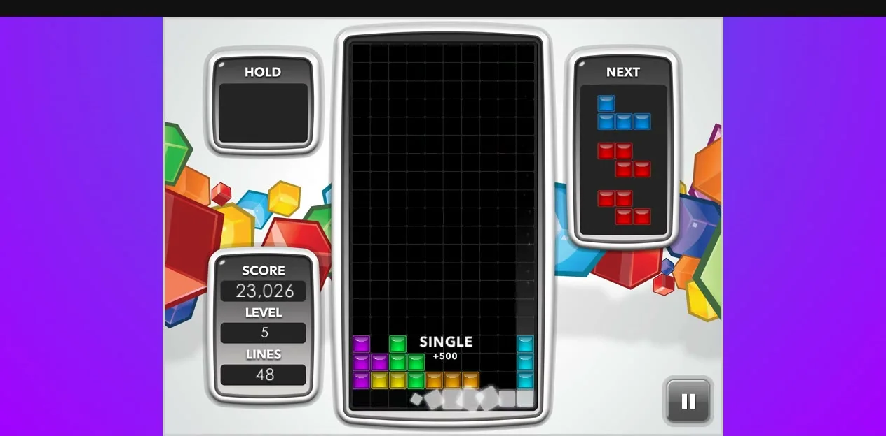
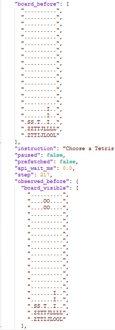

このUIがしていること
観測、選択、実行、検証という4段を、はっきり分けている。特に、実行の後に画面を読み直して検証する段は、Jevの判断とは独立した確認で、判断が外れたときの検知に使える。
- 選択肢を作るのはコード、選ぶのがJevで、自由な行動生成ではなく、有限の候補からの選択になっている。
- 状態は文字（盤面の記号）で表され、人間が読んで確認しやすい。
- 画像のOCRはスコアやメニューの文字にのみ使い、盤面は色の読み取りで、Jevとは無関係と作者は明記している。
- 掲載したゲーム画面には、Jevの確率や選択の表示はない。判断の可視化は、状態JSONと投稿文の説明に頼る。
キャプチャ
{kind=link}

（原寸の画像を開く）{kind=link}

（原寸の画像を開く）見る箇所ブラウザ上のゲーム画面（盤面、HOLD、NEXT）と、Jevに渡される状態のJSON（盤面、指示、ステップ、待ち時間）
入力から画面の変化まで
-
判断への入力
ブラウザ上のテトリスの画面から、ゲーム領域を切り出す。Pythonが10×20の盤面、落下中のピース、NEXT 3個を画素の色から読み取り、コードが置ける位置と結果（消える行数、盤面の高さなど）を計算して、テキストやJSONにする。
-
Jevの判断
作者は「Jevは画像を読めないため、こちらで補助した」と説明する。Jevは、コードが用意した配置案の中から、ラベルを選ぶ。
-
結果がUIをどう変えるか
選ばれた案をコードが回転、移動、落下のキー入力に変え、実行後に画面を読み直して、期待どおりの結果か確かめてから次へ進む。JSON画像には、盤面（board_before）、観測した盤面、指示文、ステップ番号（217）、api_wait_ms が並ぶ。
- 判断型の見立て
- Choice推定
- 作者は「Jevは、コードが用意した配置案のラベルを選ぶ」と説明する。質問型の名称は明記されていない。
Jevとの適合
「現在の状態と選択肢、予想される結果」を渡して選ばせる形は、Jevの使い方の典型。ただし、テトリスとしての強さや、検証で外れを検知した実例は、この投稿からは確認できない。
確認範囲と未確認事項
タイ語の作者による投稿動画と、状態JSONの画像1枚から確認。コードはCodexが生成したもので、公開予定と述べているが、確認時点で公開は確認できなかった。プレイの結果（スコアの推移、成功率）は検証していない。
- 確認済み動画から得たゲーム画面の静止画、投稿の状態JSON画像、投稿文の構成の説明（観測、選択、実行、検証）
- 未検証プレイの成績、検証で外れを検知した例、ソースコード（公開予定と述べているが未確認）、Jevの選択の内訳
- 推定扱い質問型はChoiceと見立て。画像のJSONは一部の切り出しで、全体の構造は分からない
- 引用X投稿は2026-09-20（UTC）。動画と添付画像から必要な範囲を引用。権利は作者に帰属する